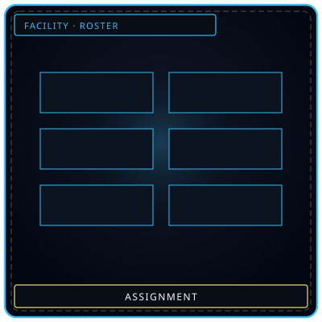
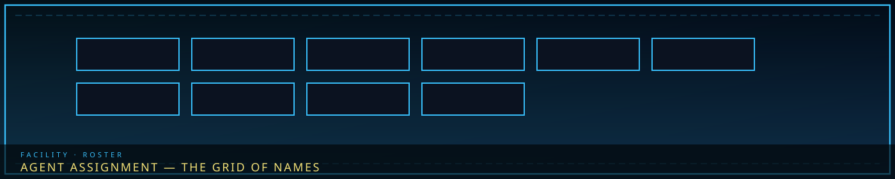

GridOpen cells
/// RAPID JUMP:
STATUS: ARCHIVE VERIFIED |
CLEARANCE: LEVEL-4 OVERSIGHT |
PROTOCOL: REVERIE DIRECTORATE
ARTICLE
DISCUSSION
SOURCE
HISTORY
YEAR 4,238 · DAWN OF HOPE
FACILITY · PERSONNEL
Agent Assignment
“Empty cells waiting for plates. Assignment is a grid, not a portrait.”

RESResilience · Han-weight · deep blue
CLAClarity · memory / Dream · pale
CMPComposure · Flerehan · crimson
RSVResolve · Ferrehan · black
Overview
Deployment phase is after expansion, before management. Agents are posted to floors. Echo-Cores are not assigned — they are the floors. Seiyon is the Secretary on the palm, not a ninth posting. Agents are posted. They are not hired from a menu.
Agent assignment is facility-wide. Neutral Command signs. The roster lives here, not only on Floor 1.
“The right person in the right room can contain a monster. The wrong person in the wrong room becomes one.”
Every R.D. body is scored on four attributes. Civilians average 20–30. Trained personnel 40–60. Echo-Cores exceed 80. Fragile 1–20, Average 21–40, Trained 41–60, Veteran 61–80, Exceptional 81–100.
| Attribute | Color | Measures | Trains by |
|---|---|---|---|
| Resilience | Deep Blue | Physical endurance — Han-weight before breaking. HP, heavy M.A.W., long shifts. | Labor, controlled Han exposure, bearing kit. |
| Clarity | Pale White | Mental stability — resist manipulation, memory theft, Dream bleed. SP. | Meditation, brief Dream dips, memory exercises. |
| Composure | Crimson | Emotional control — work speed, Flerehan without collapse, M.A.W. bond stability. | Feel without drowning; confrontation drills. |
| Resolve | Black | Willpower — act despite weight. Ferrehan, leadership, movement under Tide. | Purpose, endurance tests, moral choices. |
Work Type pairing: Flerehan wants Composure/Clarity. Pugnahan wants Resolve/Resilience. Viderehan wants Clarity/Composure. Ferrehan wants Resilience/Resolve. Full stat math stays with the Directorate handbook; this page is who goes where.
Deployment sits after expansion and before management on the daily cycle. Neutral Command signs. Seiyon's station stays lit so a runner from Floor 5 does not have to knock on gold. Echo-Cores are not in this grid: they are the floors until suppression or exile. Seiyon is the Secretary on the palm, not a ninth posting. You do not hire an agent from a menu. You post a body that already has four numbers.
Resilience (deep blue) is physical endurance — Han-weight before breaking, long shifts, heavy kit. Clarity (pale white) is mental stability — resist manipulation, memory theft, Dream bleed. Composure (crimson) is emotional control — work speed, Flerehan without collapse, M.A.W. bond stability. Resolve (black) is willpower — Ferrehan, leadership, movement under Tide. Civilians average 20–30. Trained personnel 40–60. Echo-Cores exceed 80. Fragile 1–20 through Exceptional 81–100. Work Type pairing follows those numbers: Flerehan wants Composure/Clarity, Pugnahan Resolve/Resilience, Viderehan Clarity/Composure, Ferrehan Resilience/Resolve. This page is who goes where. The Directorate handbook keeps the rest of the math.
Process
Step 1 — Attribute assessment on all four. Step 2 — Floor assignment; transfers exist and need approval. Step 3 — Room assignment inside the floor; rotate to prevent burnout and exposure. Step 4 — Entity assignment for Work Types, by resonance compatibility.
| Floor | Primary | Secondary | Why |
|---|---|---|---|
| 1 Neutral Command | Composure | Clarity | Administration under silence. |
| 2 Maw’s Keep | Resilience | Resolve | Containment endurance. |
| 3 Extraction Hall | Composure | Clarity | Finish an extract without keeping the donor’s habit. |
| 4 Insight Forge | Clarity | Composure | Observe without becoming the paper. |
| 5 Border Watch | Resolve | Resilience | Weight at the wall. |
| 6 Deep Vault | Clarity | Resolve | Archives want clear thinking and moral strength. |
| 7 Shadow Corps | Composure | Resolve | Infiltration: control plus determination. |
| 8 Gate Watch | Resolve | Clarity | Hear a voice from outside and not open the door. |
Neutral Command signs. Insight Forge observes. A refused transfer is still an assignment. You do not live on Border Watch or Extraction until you Fracture; rotation exists because the alternative is a Core.
Attribute assessment on all four, then floor assignment, then room assignment inside the floor, then — only for Floor 2 — entity assignment by resonance compatibility. Transfers exist and need approval. Rotation exists because the alternative is a Core. You do not live on Border Watch or Extraction until you Fracture. Inside a floor, room assignment also follows Han element and the agent's worst stat. Do not put a Fragile-Clarity clerk on a Void subject and call it training. A refused transfer is still an assignment. Neutral Command signs. Insight Forge observes. The keep still requires Dekan's cell. The Hall still requires a veto. The vault still requires Marjuk's seal. The wall still requires a log. The Corps still requires a return plan. The Gate still requires a count.
Entity assignment
Resonance scan in the Extraction Hall. Attribute match against the entity’s requirements. Work Type preference against the entity’s response. Experience gates higher-risk cells.
Rules: no one works the same entity more than seven consecutive days. Mandatory three-day break between entity assignments. Maximum three Work Type interactions per entity per day. If the Sorrow Gauge exceeds 75%, the assignment is suspended.
Rotation: daily 8-hour room shifts; weekly entity rotation; monthly floor moves with approval; quarterly full reassessment. Inside a floor, room assignment also follows Han element and the agent’s worst stat — do not put a Fragile-Clarity clerk on a Void subject and call it training.
Resonance scan happens in the Extraction Hall, not at deployment from a menu. Attribute match against the entity's requirements. Work Type preference against the entity's response. Experience gates higher-risk cells. Caps: no one works the same housed entity more than seven consecutive days; mandatory three-day break; maximum three Work Type interactions per entity per day; Sorrow Gauge over 75% suspends the assignment. Rotation: daily 8-hour room shifts, weekly entity rotation, monthly floor moves with approval, quarterly full reassessment. DSE is transit kit from Floor 1. Named Vigil is Floor 2's register and Floor 3's frame. Bonding is a session after a scan. You do not assign M.A.W. at deployment.
Agents, clerks, specialists
An agent is posted to work: cells, wall, routes, gate. A clerk watches, files, issues, assesses — gauges on F2, issue on F3, ledgers on F4/F6, threat paper on F5. A specialist does the job a clerk cannot: intake, frames, Cheongula-adjacent, infiltration, warning decode. DSE is transit kit from Floor 1. Named Vigil is Floor 2's register and Floor 3's frame. You do not assign M.A.W. at deployment from a menu. Bonding is a session after a scan.
Caps: no one works the same housed entity more than seven consecutive days; three-day break; max three Work Type interactions per entity per day; Sorrow Gauge over 75% suspends the assignment. Rotation: 8-hour room shifts, weekly entity rotation, monthly floor moves with approval, quarterly reassessment. Echo-Cores are not in this grid.
An agent is posted to work: cells, wall, routes, gate. A clerk watches, files, issues, assesses — gauges on Floor 2, issue on Floor 3, ledgers on Floor 4 and 6, threat paper on Floor 5, return counts on Floor 8. A specialist does the job a clerk cannot: intake, frames, Cheongula-adjacent, infiltration, warning decode. Consecutive posting is how a keep agent knows these cells, a Hall specialist does not take the donor home, a vault clerk stays off Cheongula, a slit pair knows which slit is which, a field agent keeps a route that is not on Floor 5's board. A tourist from another floor does not. Moving them for a day resets that familiarity. Dekan's veto does not reset. Marjuk's seal does not reset. Floor 8's return plan does not reset.
Clerks provide the floor's ordinary continuity: gauges that stay someone's job, issue that stays named, ledgers that stay ledgers, threat paper that Floor 7 is not allowed to invent, returns that Floor 1 can file. If the clerks are gone, the work is still there. It just stops being anyone's job until it is everyone's. Agents are the bodies you point at a cell, a slit, a route, a gate. Specialists are the bodies you do not point at the wrong door. Consecutive posting is how a keep agent knows these cells and a vault clerk stays off Cheongula. A day off the floor is a day off that list.
Floor 1 armory. Transit metal. Clicks like ordinary kit.
Floor 2 register + Floor 3 frame. Veto, scan, bond.
Floor 6 Grade-gated drawers. Not an extract.
DSE and Named Vigil
Deployment does not hand out extracts. Floor 1's armory checks out DSE — Default Standard Equipment — for transit between floors. It clicks like ordinary metal. Named Vigil does not live there. Floor 2 owns the register. Floor 3 owns the frame. A bearer who wants a named piece still needs a veto, a scan, and a bonding session. Weapon, suit, gift are three stations. Mixing them on one rig is how a bearer walks out wearing a second entity.
Resilience gates heavy wear. Clarity gates memory bleed from a Lament edge. Composure gates bond stability. Resolve gates rejection. Floor 6 takes a second log when Debt or Balance spends obligation, and when a Lament edge reveals a name. You do not assign M.A.W. from a menu at dawn. You post a body. The piece comes later, or it does not come at all. SE-003 yields nothing. Relics that are not extracts are Floor 6's Grade-gated drawers, not Floor 3's issue clerk.
Clerks do not bear Named Vigil as a uniform. Specialists on Floor 3 may test after a scan. Agents on Floor 2 work cells in DSE unless a named piece has already been issued and bonded. Floor 5's wall is DSE and slits. Floor 7's routes are DSE unless Ishall says the piece leaves with them — and Floor 8 still counts the return of the body, not the crate.
Wrong room
Fragile-Clarity clerk on a Void subject is not training. A Floor 5 tourist in the keep does not know the cells. An unposted expansion is a new room for an Ordeal. Panic is assignment that was already wrong. Fracture is further down that road. Core Suppression is not a transfer request.
Fragile-Clarity clerk on a Void subject is not training. A Floor 5 tourist in the keep does not know the cells. An unposted expansion is a new room for an Ordeal. Panic is assignment that was already wrong. Fracture is further down that road. Core Suppression is not a transfer request. Joint Assignment lets the palm post across floors; it does not let an agent work a cell without the keep, run a crucible without a veto, leave the wall without a return plan, or open a cylinder because the drawer looked interesting.
Panic is assignment that was already wrong
SP tracks Clarity. Witnessed breaches and Void/Weight Han drain it. At 0 the body is still a person, briefly unusable. The four behaviors are already tabled on Panic: murderous when Resilience is the hole, wandering when Clarity is the hole, paralyzed when Composure is the hole, fanatic when Resolve is the hole. Remedy is rest, transfer off the floor, and in extreme cases Core-adjacent counseling — not a Memory Wash. Washers erase. They do not restore SP.
M.A.W. Corrosion is a separate track: a Grade-gated piece that has drunk too much of its donor starts writing that donor's habit onto the wearer. That is a Hall and keep problem as well as an assignment problem. Fracture is a person becoming Han-structure. Panic is still a person. An untreated panic loop is one documented road into Fracture, which is why Floor 4 files the after-action and Floor 1's infirmary takes the body.
Core Suppression is not a transfer request. An Ordeal is not a new posting. Facility Meltdown sends non-combat staff to Floor 1 bunkers; it does not rewrite the roster. Echo-Cores are not in this grid.
Cores are not assigned
Echo-Cores are the floor until suppression or exile. Agents rotate. A Core Suppression is a floor event, not a transfer request. Panic is what happens when assignment was wrong; Fracture is further down that road. See Panic, upgrades, Directorate.
Nine Echo-Cores, eight floors. Majin signs Floor 1. Seiyon is the station on Floor 1, not a ninth floor. Dekan is the keep. Zyrak is the Hall. Ayshuk is the Forge. Mellda is the wall. Marjuk is the vault. Ishall is the Corps. Xyan is the Gate — and before Day 355 the body is outside, so suppressing Gate Watch is still suppressing the floor, not a chair. Agents rotate. Cores stay. A Core Suppression is a floor event. See Panic, upgrades, Directorate.